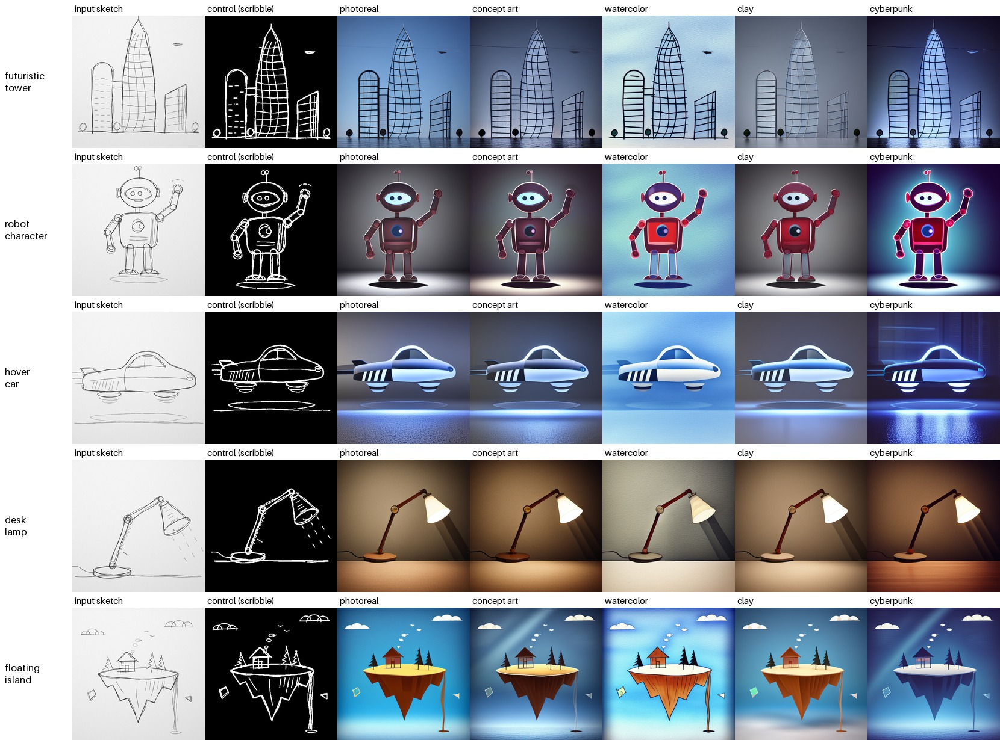
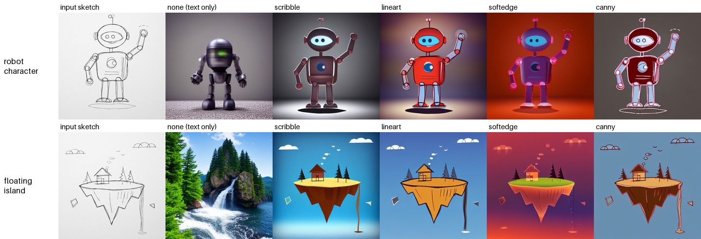
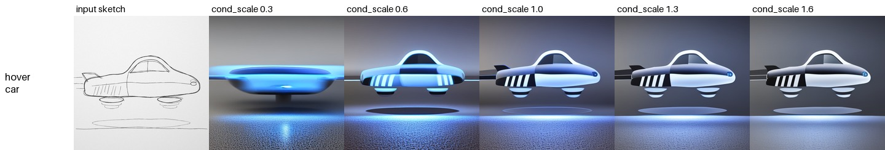
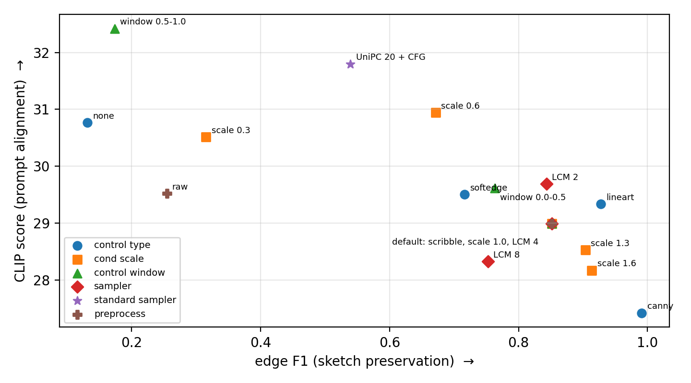
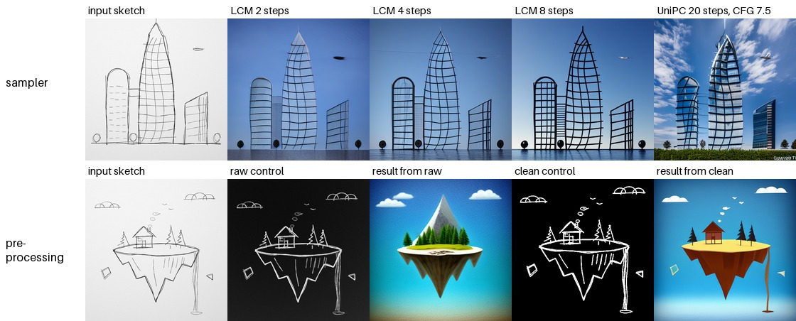
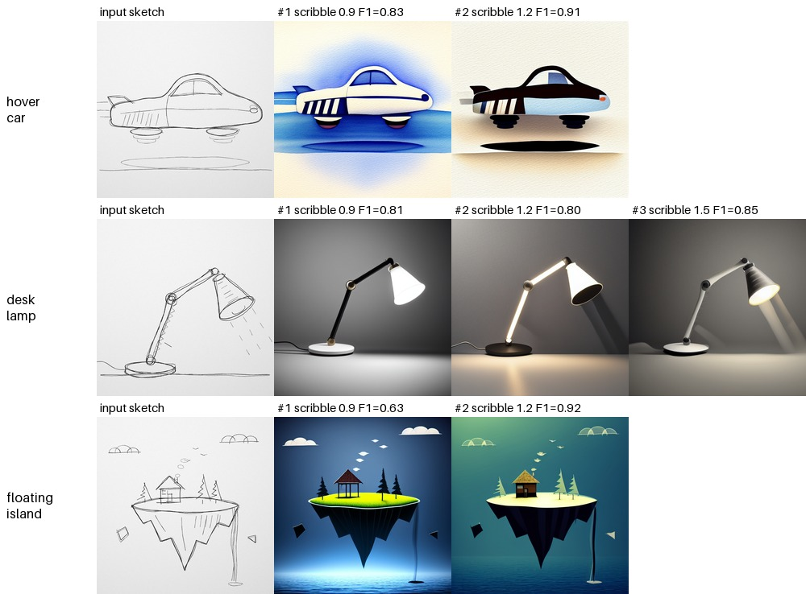

In this assignment I built a system that turns a rough hand-drawn sketch into a detailed, realistic or stylised image while keeping the structure of the drawing. A plain text-to-image model only receives a sentence, so it invents its own composition. My goal was to make the sketch control where things are (outline, pose, proportions) and to let a text prompt control how they look (material, colour, light, style). I used Stable Diffusion 1.5 [1] with ControlNet [2] and studied which settings give the best balance between faithfulness to the sketch and image quality. I measured this with objective metrics on five sketches and 135 generated images. As extensions I added a web interface and a small self-correcting agent.
Diffusion model. Stable Diffusion is a latent diffusion model [1]. A VAE compresses a 512×512 image into a
64×64×4 latent. Generation starts from Gaussian noise in this latent space, and a U-Net predicts and removes the
noise step by step [3, 5]. The prompt enters the U-Net through cross-attention on CLIP text embeddings [10].
With classifier-free guidance [4] the noise prediction is ε = εuncond + w·(εtext − εuncond),
where w is the guidance scale.
ControlNet. ControlNet [2] is a trainable copy of the U-Net encoder that receives a control image (here: my sketch). Its features pass through zero-initialised 1×1 convolutions and are added to the skip connections of the frozen U-Net. Because of the zero initialisation, an untrained ControlNet changes nothing. My smoke test with random weights confirmed this (identical outputs with and without the sketch). The added signal is multiplied by the conditioning scale, and it can be switched on only for part of the denoising steps (control window). I used the pretrained ControlNet v1.1 models for scribble, lineart, soft edge and canny; I did not train a network.
Sketch preprocessing (my own, preprocess.py). Phone photos of paper have shadows, grey paper and noise.
I divide the image by a large median blur to flatten the lighting, apply an adaptive threshold, remove connected
components smaller than 30 px, crop to the drawing with a 6% margin, pad to a square and resize to 512 px. From this
clean line mask I build the control map in the form each ControlNet expects (white lines on black): thickened lines for
scribble, thin lines for lineart, blurred lines for soft edge and Canny edges for canny.
Prompts. Each sketch has a short subject description. A style module adds a style suffix (photoreal, concept art, watercolor, clay, cyberpunk) and a negative prompt. All prompts stay below CLIP's 77-token limit.
Evaluation metrics (metrics.py). To measure sketch preservation I skeletonise the clean sketch to 1-px
centre lines and detect edges in the generated image (bilateral filter + Canny [12]). With distance transforms I compute
edge recall (share of sketch pixels that have a generated edge within 3 px), edge precision, their F1, and the
Chamfer distance from sketch to image in pixels. For prompt alignment I use the CLIP score [11]
(100·cosine similarity of image and prompt, ViT-B/32). I validated the edge metric before use: the sketch against
itself gives 1.0, a 4-px shift still gives recall 0.999, a 15-px shift 0.53, an unrelated drawing 0.14, a blank image 0,
and random noise 0.49 recall but only 0.14 precision. This is why I report F1 and not recall alone.
I dropped an edge-SSIM metric because a blank image scored 0.75.
Hardware constraint. I had no GPU, only a laptop CPU (Intel Core i5-7300U, 4 threads, 16 GB RAM). A standard 20-step sampler with guidance took about 12 minutes per image. I therefore used LCM-LoRA [8, 9], a small set of low-rank weights distilled so that SD 1.5 can produce an image in 2–8 steps without classifier-free guidance (w = 1). My default configuration is: SD 1.5, ControlNet scribble, conditioning scale 1.0, control window 0–1, LCM-LoRA with 4 steps, guidance 1.0, 512×512, seed 1, cleaned sketch, photoreal style. This takes about 80 s per image. One study (E5b) uses the standard UniPC sampler [6] with 20 steps and guidance 7.5 as a quality reference.
Inputs. Five sketches (tower, robot, hover car, desk lamp, floating island), drawn as pencil-style line drawings on
textured paper with uneven lighting (sketches/). Experiments: E1 control type (incl. a text-only baseline
without ControlNet), E2 conditioning scale, E3 control window, E4 style, E5 LCM step count, E5b standard sampler, E7 seeds,
E8 raw vs. cleaned sketch; 135 images in total. One factor is changed at a time from the default.
Reproducibility. Python 3.14, PyTorch 2.12 (CPU, float32), diffusers 0.43.0, transformers 5.23.0, peft 0.21.3.
Models: stable-diffusion-v1-5, lllyasviel/control_v11p_sd15_{scribble,lineart,softedge,canny},
latent-consistency/lcm-lora-sdv1-5, openai/clip-vit-base-patch32. All settings are in
configs/experiments_cpu.yaml; seeds are fixed (torch.Generator). Re-run with
python scripts/run_experiments.py --config configs/experiments_cpu.yaml, then scripts/analyze.py and
scripts/make_figures.py. Exact package versions are saved in results/env.json, and every image has a row in
results/<experiment>/metrics.csv. A GPU configuration with SDXL [7] and more seeds is included
(configs/experiments.yaml, Kaggle notebook) but was not run.

| Control | Recall | F1 | Chamfer (px) | CLIP |
|---|---|---|---|---|
| none (text only) | 0.24 | 0.13 | 24.4 | 30.8 |
| scribble | 0.85 | 0.85 | 2.9 | 29.0 |
| lineart | 0.89 | 0.93 | 2.5 | 29.3 |
| soft edge | 0.71 | 0.72 | 5.2 | 29.5 |
| canny | 0.99 | 0.99 | 1.1 | 27.4 |
Table 1. Mean over the 5 sketches.
Without ControlNet the model ignores the drawing (F1 0.13). It draws a generic robot or a real waterfall (Fig. 3). All four ControlNets raise F1 to 0.72–0.99. Canny scores highest, but visually it copies the pencil strokes as dark outlines, and it has the lowest CLIP score. Lineart gives the best balance: F1 0.93 with a natural look. Soft edge allows the most freedom but loses thin parts, such as the hover-car spoiler (F1 0.34).


| Setting | F1 | Chamfer | CLIP |
|---|---|---|---|
| scale 0.3 | 0.32 | 15.3 | 30.5 |
| scale 0.6 | 0.67 | 5.3 | 30.9 |
| scale 1.0 | 0.85 | 2.9 | 29.0 |
| scale 1.3 | 0.90 | 2.7 | 28.5 |
| scale 1.6 | 0.91 | 2.8 | 28.2 |
| window 0–0.5 | 0.76 | 4.8 | 29.6 |
| window 0.5–1 | 0.17 | 19.9 | 32.4 |
Table 2. E2 and E3 (window = fraction of steps with ControlNet active, scale 1.0).
The conditioning scale shows a clear trade-off. F1 rises steeply up to 1.0 and then saturates (0.85 → 0.91), while the CLIP score falls from 30.9 to 28.2: the stronger the sketch, the less freedom the model has to follow the text. I found 0.6–1.0 to be the useful range.
The control window shows when the sketch matters. Applying ControlNet only in the first half of the steps keeps most of the structure (F1 0.76), while applying it only in the second half has almost no effect (0.17). The layout of the image is decided in the early, high-noise steps. Releasing the control early is a cheap way to give the model more freedom for texture and detail.

| Setting | F1 | CLIP | s / img |
|---|---|---|---|
| LCM 2 steps | 0.84 | 29.7 | 45 |
| LCM 4 steps | 0.85 | 29.0 | 79 |
| LCM 8 steps | 0.75 | 28.3 | 121 |
| UniPC 20, CFG 7.5 | 0.54 | 31.8 | 724 |
| raw sketch | 0.26 | 29.5 | – |
| cleaned sketch | 0.85 | 29.0 | – |
| seeds 1 / 2 / 3 | F1 0.85 / 0.82 / 0.77 | – | |
Table 3. Median CPU time per image.
Style (E4). The style prompt changes the look strongly but the structure very little. F1 stays between 0.78 and 0.88 for all five styles (Fig. 2). The exception is cyberpunk on the hover car (F1 0.46): recall stayed at 0.94, but neon reflections and streaks created many extra edges (precision 0.31). Sampler (E5). With LCM, 2 and 4 steps preserve the sketch equally well, and 4 steps give cleaner surfaces. 8 steps did not help. On the hover car F1 fell to 0.34, but recall stayed at 0.96: the shape was kept, and a detailed water texture added many extra edges (precision 0.21). The same happened with cyberpunk. This shows why F1 must be read together with recall and the images. The standard 20-step sampler with guidance 7.5 gives the most realistic images and the highest CLIP score: real sky, clouds and glass reflections (Fig. 6). The strong text guidance also pulls the image away from the drawing (F1 0.54), and each image is 9× slower on my CPU. Seeds (E7). Different seeds change colours and materials, but the shape stays the same; mean F1 varied by 0.08 over three seeds, so differences smaller than this between settings should not be over-interpreted. Preprocessing (E8) had the largest single effect of all experiments: using the raw photo of the sketch as control lowers F1 from 0.85 to 0.26. The grey paper texture and shadows become false "lines", so the model builds a different object (Fig. 6, bottom: a mountain appears and the cabin and waterfall are lost).


Web interface (app/gradio_app.py). A Gradio app where a user uploads or draws a sketch, types what it is,
and chooses style, ControlNet type, conditioning scale, control window, steps and seed. It shows the control map, the result
and the edge metrics, so a user can see how faithful the image is.
Self-correcting agent (agent.py). The agent turns a free-text request into settings and checks its own
output. It (1) detects the style from keywords (e.g. "watercolor", "product render"), (2) picks the ControlNet type from the
line density of the sketch and starts at scale 0.9, (3) generates, (4) measures edge F1 and CLIP, and (5) if the structure is
too weak it raises the scale by 0.3 or switches to lineart; if the image ignores the prompt it lowers the scale. It stops at the
target or after 3 attempts and keeps the best image. Every decision is written to a log.
In my demo (Fig. 7) the agent improved F1 on all three sketches: hover car 0.83 → 0.91, desk lamp 0.81 → 0.85 and floating island 0.63 → 0.92, the last one in a single correction. Each retry also uses a new seed, so part of the gain comes from seed variation. For the car and the lamp the CLIP score fell by 1–2 points as the scale went up, as E2 predicts.
I built a complete sketch-to-image pipeline from pretrained Stable Diffusion 1.5 and ControlNet, with my own preprocessing, evaluation metrics, experiment framework, web interface and agent. The experiments show that ControlNet raises sketch preservation from F1 0.13 (text only) to 0.85–0.93 at a small cost in CLIP score (30.8 → 29.0), and that the main trade-off is between conditioning strength and text freedom. Cleaning the sketch was the most important step.
REFERENCES.md.AI assistance. I used an AI coding assistant (Claude, Anthropic) to help write parts of the code and documentation. I reviewed and ran all experiments myself and checked the results and conclusions.